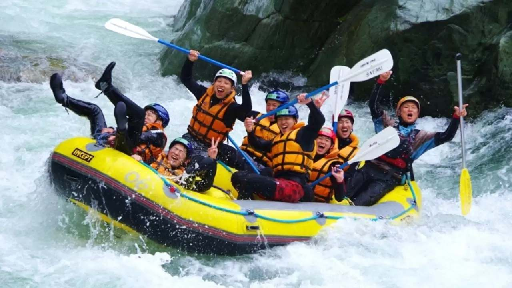
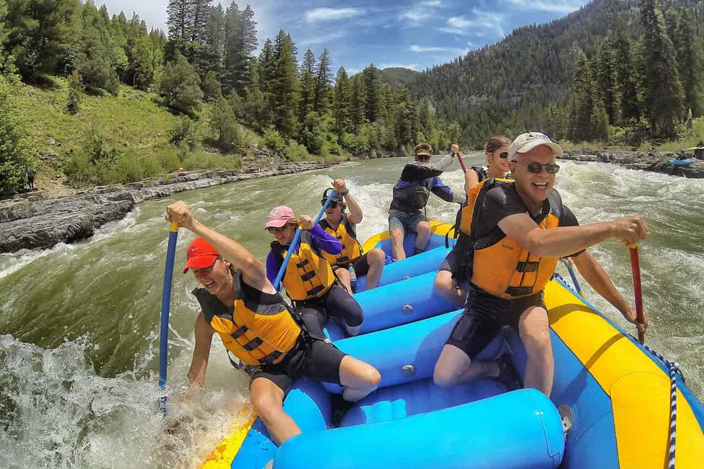
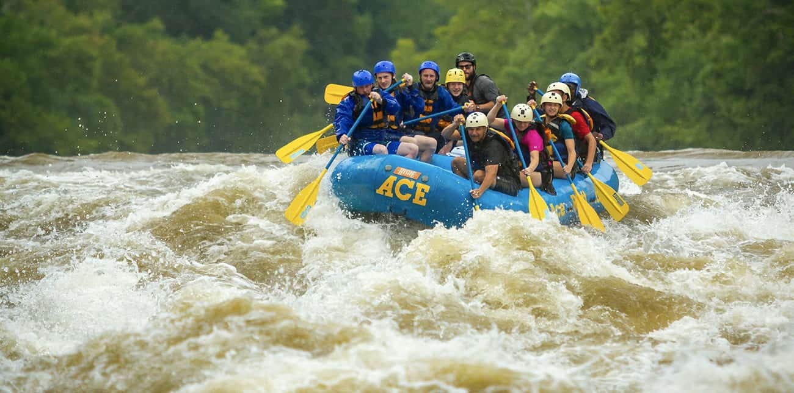
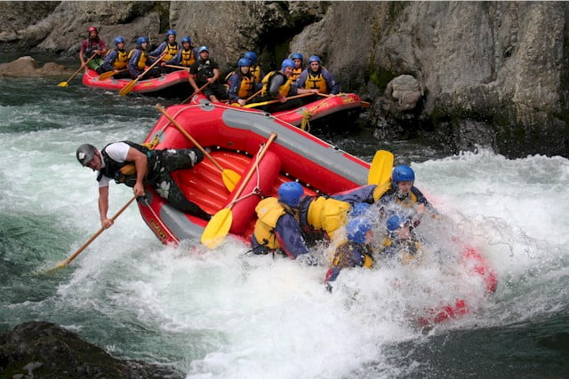

Purpose: To provide exhilarating and unforgettable rafting experiences that connect people with nature, foster teamwork, and inspire a spirit of adventure. Mission: Our mission is to deliver safe, thrilling, and eco-friendly rafting expeditions while promoting an appreciation for the natural world. Through exceptional customer service and skilled guidance, we aim to create memorable journeys that bring individuals, families, and teams closer together. Creed: We believe in the power of nature to transform lives. We commit to respecting and preserving the rivers we navigate. We embrace challenge as an opportunity for growth. We prioritize safety, integrity, and fun in all our adventures. We strive to build connections—between people and the environment, and with each other. Motto: "Ride the Rapids. Live the Adventure." Core Values: Safety First: Your adventure should always be exciting—but safe. Environmental Stewardship: We protect the rivers and surrounding ecosystems for future generations. Excellence in Service: From planning to paddling, were committed to exceeding expectations. Team Spirit: Collaboration and camaraderie fuel every great adventure. Innovation and Growth: Constantly improving our services and embracing new challenges. Vision: To be the leading rafting company known for crafting extraordinary outdoor experiences that leave a lasting impact on our customers and the environment. Slogan: "Natures Thrill, Your Journey." Tagline: "Discover the flow of adventure with Wild Rapids."

Nate's Rafting
History
The Story of Nate’s Rafting In the heart of the mountains, where the rivers run wild and free, Nate’s Rafting was born. Nate, an avid outdoorsman with a passion for adventure and a deep respect for nature, started his journey as a young boy paddling the rivers near his hometown. With every rapid conquered and every calm stretch navigated, he discovered the transformative power of the water—a place where challenges could be met head-on, bonds could be formed, and life’s worries could be left behind. Years later, after guiding expeditions for friends and family, Nate realized his calling: to share this experience with the world. Armed with little more than a secondhand raft, a dream, and a fierce determination, he launched Nate’s Rafting. What began as a one-man operation quickly grew, fueled by word of mouth from those who had discovered not just the thrill of the rapids but the joy of adventure itself. The company evolved with a simple philosophy: every trip should be more than a ride—it should be a journey that connects people to the wild beauty of the rivers, to each other, and to themselves. Nate’s Rafting became a haven for families seeking a memorable outing, friends looking for a rush, and teams aiming to build trust and camaraderie. As the business expanded, Nate remained committed to his roots. Every guide he hired shared his love for nature and his belief in making every moment count. The team adopted eco-friendly practices, ensuring the rivers they relied on would remain pristine for generations to come. Community partnerships and conservation efforts became a cornerstone of the company’s mission. Today, Nate’s Rafting stands as a symbol of adventure and connection. From tranquil float trips to adrenaline-pumping white-water challenges, Nate’s Rafting continues to offer experiences that bring people together, reminding them of the power and beauty of the natural world. The story of Nate’s Rafting isn’t just about a business; it’s about a belief—that life is best lived with a paddle in hand, friends by your side, and the river ahead guiding the way.
Adventure Awaits You!



